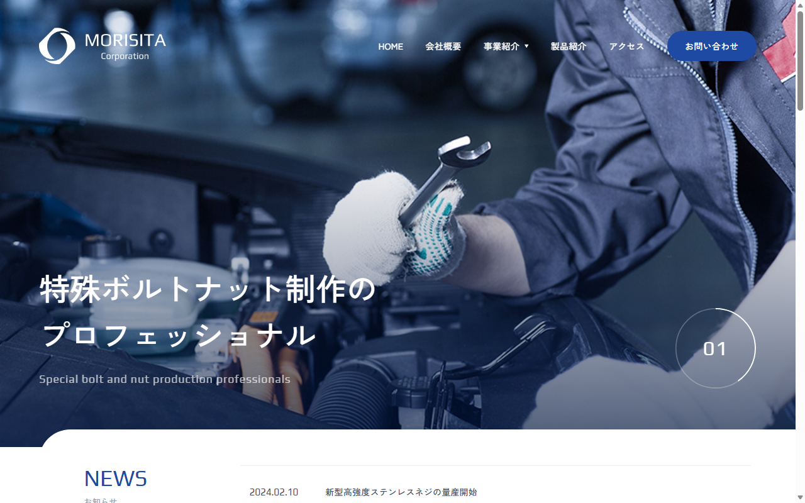
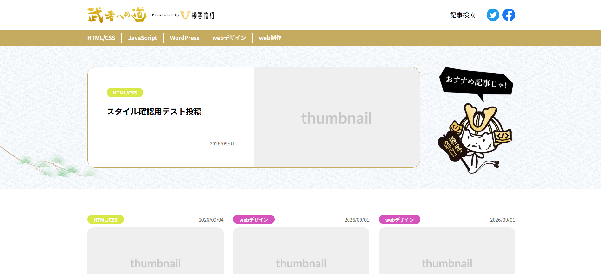
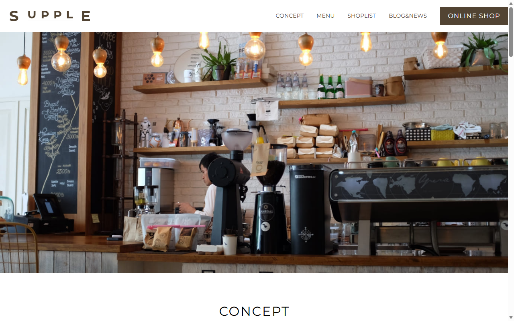
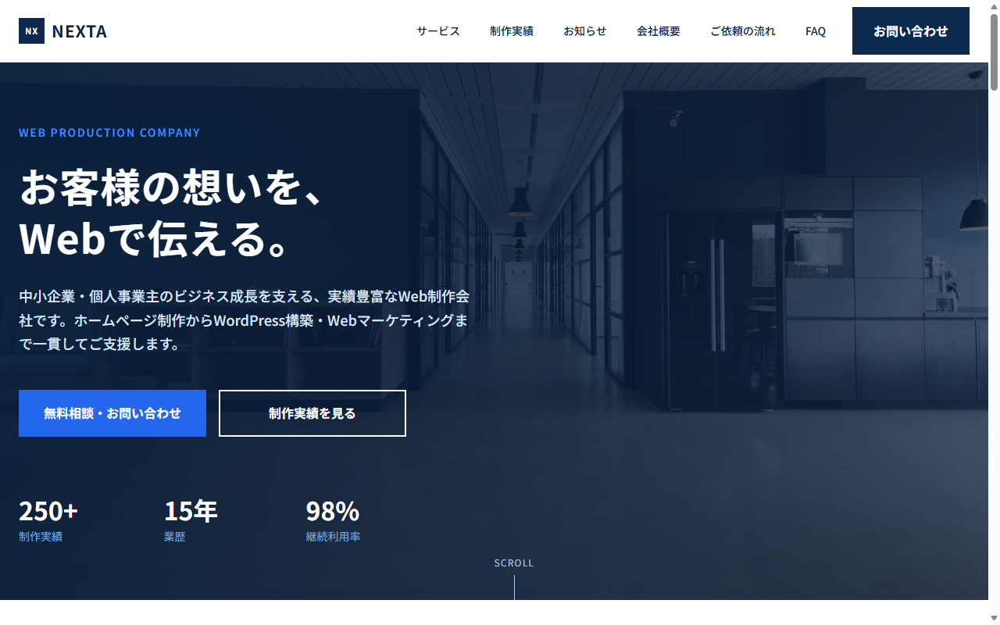
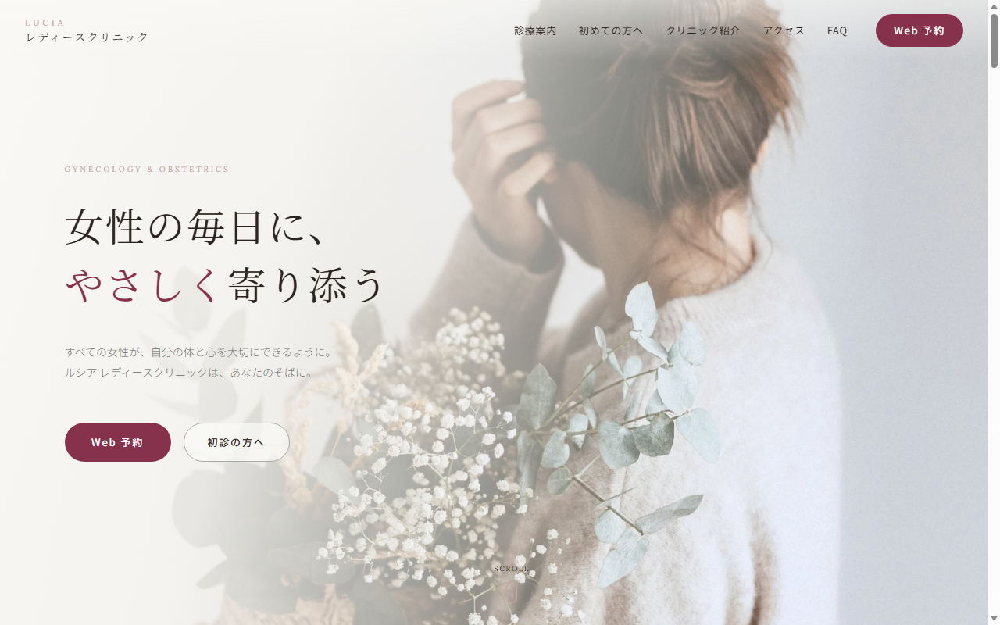
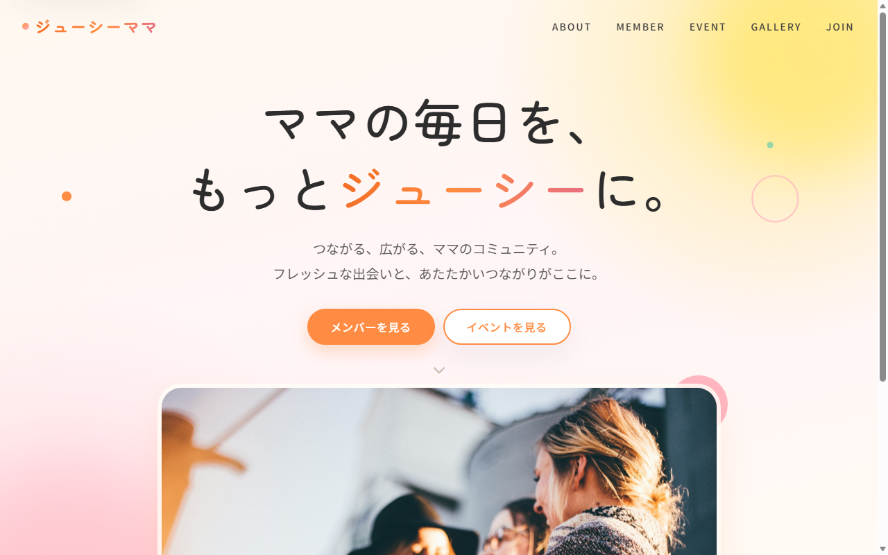
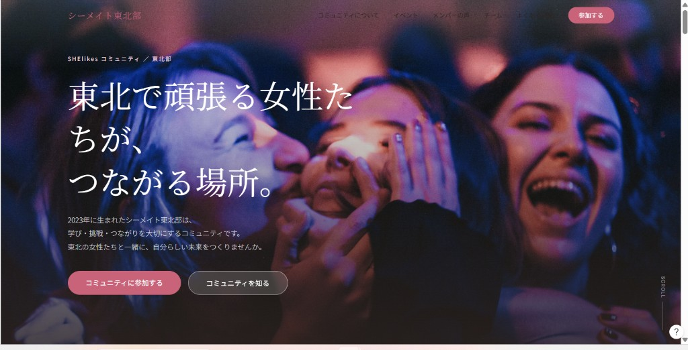
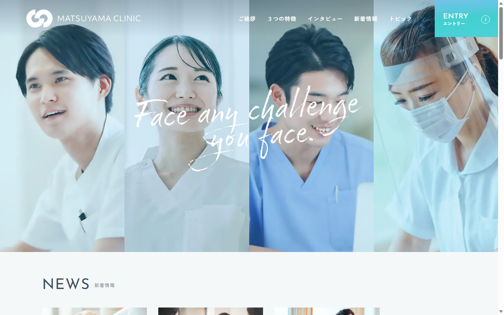
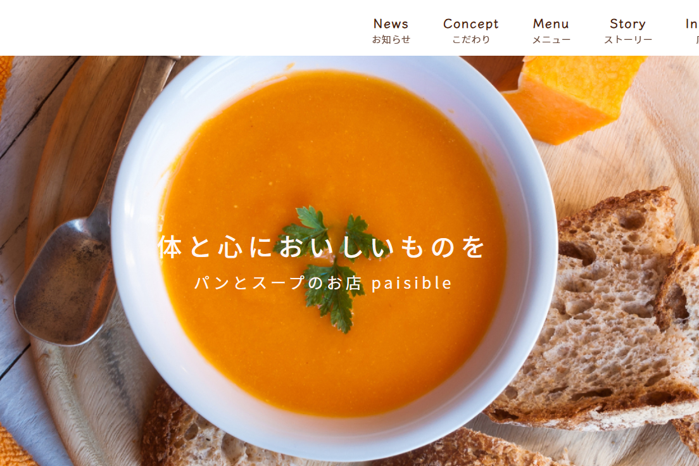

WORKS
制作実績
これまでに制作したWebサイトをご紹介します。
-

01
MORISITA
企業サイト
担当範囲：静的コーディング / WordPressテーマ / カスタム投稿
特殊ボルトナットメーカーの企業サイトです。公開中のページは静的版です。
VIEW SITE（新しいタブで開きます） -

02
武者への道
メディアサイト
担当範囲：WordPressテーマ / ACF / PHP
駆け出しデザイナー・エンジニアを応援するメディアサイトです。
VIEW SITE（新しいタブで開きます） -

03
SUPPLE
カフェサイト
担当範囲：WordPressテーマ / カスタム投稿 / ACF
コーヒーを扱うカフェのWordPressサイトです。
VIEW SITE（新しいタブで開きます） -

04
NEXTA
企業サイト
担当範囲：静的コーディング / レスポンシブ対応
中小企業のビジネスを支えるWeb制作会社のサイトです。
-

05
Lucia
クリニックサイト
担当範囲：静的コーディング / レスポンシブ対応
女性のライフステージに寄り添う婦人科クリニックのサイトです。
-

06
Juicy Mama
コミュニティサイト（制作中）
担当範囲：静的コーディング（ヘッダー・ヒーローまで）
ママのコミュニティサイトです。静的サイト化の途中で、現在はヘッダーとヒーローまで実装しています。
-

07
シーメイト東北部
コミュニティサイト（制作予定）
担当範囲：コーディング前（Figma AIのデータを元に制作予定）
SHElikesコミュニティ東北部向けのサイトです。デザインデータはあり、コーディングはこれから行う予定です。
-

08
Matsuyama Clinic
クリニックサイト / 採用サイト
担当範囲：静的コーディング / レスポンシブ対応
松山クリニックの採用サイトです。ご挨拶、３つの特徴、インタビュー、新着情報、エントリーを1ページで掲載しています。メニューのトピックはエントリーへリンクしています。
VIEW SITE（新しいタブで開きます） -
画像準備中
09
Cafe Calmati
カフェサイト
担当範囲：デザインカンプからのコーディング / レスポンシブ対応
PCデザインをもとに、スマートフォン表示も合わせて制作したカフェサイトです。
-

10
Paisible
オリジナルサイト
担当範囲：デザイン / コーディング / レスポンシブ対応
デザインからコーディングまで一貫して制作したサイトです。
VIEW SITE（新しいタブで開きます） -

11
Sample Store
店舗サイト
担当範囲：WordPressテーマの実装
地域のコンビニを想定した店舗サイトです。
VIEW SITE（新しいタブで開きます）
ABOUT ME
私について
デザインの細部まで大切に、丁寧なWebサイト制作を。
HTML・SCSS・JavaScriptによるコーディングを中心に、WordPressのオリジナルテーマ制作にも取り組んでいます。
デザインの意図を汲み取り、余白や文字サイズ、レスポンシブでの見え方まで丁寧に調整することを心がけています。
また、更新や修正がしやすいコード設計を大切にしています。
-
01
Design Fidelity
デザインの再現性
デザインカンプの余白・文字サイズ・配置・配色など、細部まで丁寧に確認しながら実装します。
-
02
Maintainability
保守しやすいコード
分かりやすいクラス名や共通パーツを使用し、後から修正・管理しやすいコードを心がけています。
-
03
Usability
使いやすさへの配慮
レスポンシブ対応に加え、操作性やアクセシビリティにも配慮したサイト制作を目指しています。
SKILLS
使用技術・ツール
これまでに学習・制作で使用してきた技術やツールをご紹介します。
-
01Coding & CMS
-
02Frontend & Development
-
03Design & Tools
CONTACT
お問い合わせ
Webサイト制作のご相談など、お気軽にお問い合わせください。